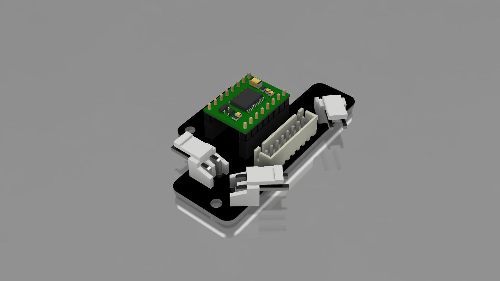
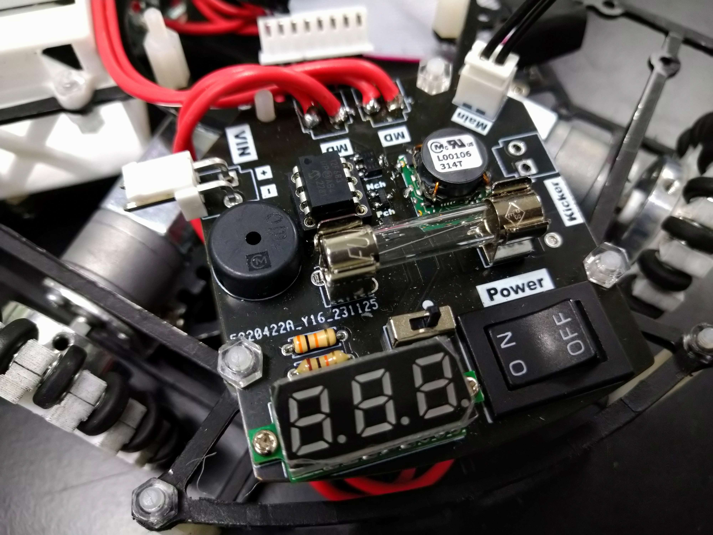

TOINIOT² Blog
基板更新!
2024-01-29 Writer: 010
毎度おなじみJLCPCB様に基板を頼ませてもらったお話(いつもお世話になっております)。
今回はモータードライバーとラインセンサの基板を注文させていただきました。詳細の説明の前にまずはJLCPCB様について。
JLCPCBは主に基板製作を手掛けている会社です。しかし、それだけではなく、3DプリントやCNC加工なども行っており、彼らに作れないものはない！と言っても過言ではありません。
そして、JLCPCB最大の特徴は「安い」「早い」「正確」の3拍子がそろっていること。商品自体は１＄から発注可能、工場は海外にあるのに、空輸とはいえ発注から2週間かからずでの到着はかなり魅力的です。
もちろん、確立された機械生産により、不良品に当たる可能性は極めて低く、少なくても僕たちは一度も遭遇していません(僕たちの設計ミスはたくさんありましたが(笑))。今ならクーポンもゲットできるみたいです。
この機会をお見逃しなく！！

↓JLCPCB様のHP
https://jlcpcb.com/
↓クーポンゲットのチャンス！
https://jlcpcb.com/JPV
さて、ここからは基板の紹介。
えっ？前にも同じ基板頼んでなかったかって？
いやーまさかそんなわけあるはずが…
ありました。
以前頼んだものに少々ミスがありまして…(もちろん“僕たちの”ですけどね)


まず、モータードライバー基板に関しては配線ミスです。前回(基板ったら基板。Yay!)いやというほど学ばせてもらいました。おかげで今回はノーミスです。
その他変更点と言えばコネクタの位置を改良しました。今までスペースがないということで線を基板に直付けしていたんですよね(危ない)。
次はラインセンサ基板です。
実はこちらには配線ミスはなかったんです。じゃあ何やらかしたんだよっていう話なんですけど、端的に言うとつける部品を間違えてしまいました。この記事(おNewのきばん、きた。)でも触れていますが、この基板にはJLCPCB様の基板製造の後、指定した部品をはんだしてくれるサービスを活用しています。表面実装部品の大変なはんだを代行してもらうというものです。
ここで問題が起きました。LEDのチップ抵抗として以前330Ωをつけていただいたのですが、この抵抗値が大きすぎました。僕たちのチームではラインセンサはデジタルで読んでいるのですが、LEDの光が弱くなり、照度センサの可変抵抗を最大まで弱めても「０(緑判定)」から変わらず。抵抗を75Ωに変更するにあたって再度頼ませていただきました。やっぱり表面実装部品のはんだ代行サービスは神です。大会まであまり時間がなかった中、本当に助かりました。JLCPCB様、ありがとうございます！
長々と書いてしまいましたが今回は以上となります。最後まで読んでいただきありがとうございました。